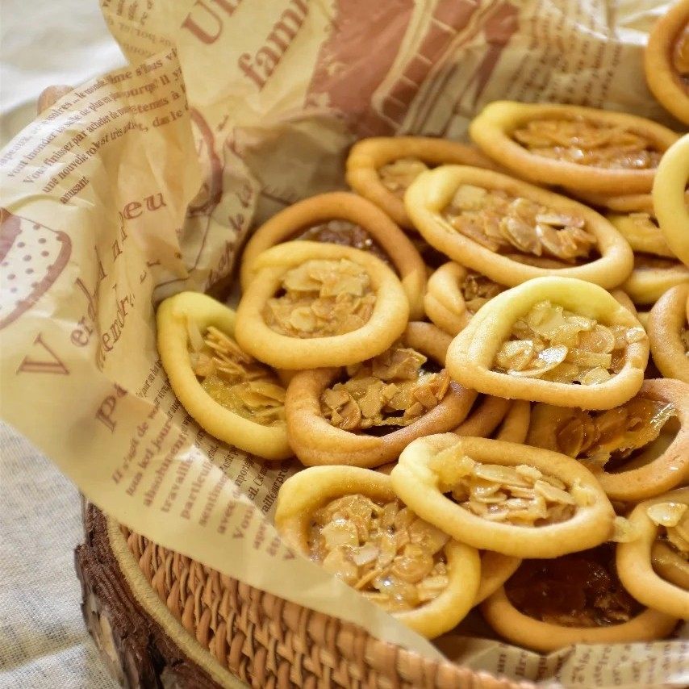
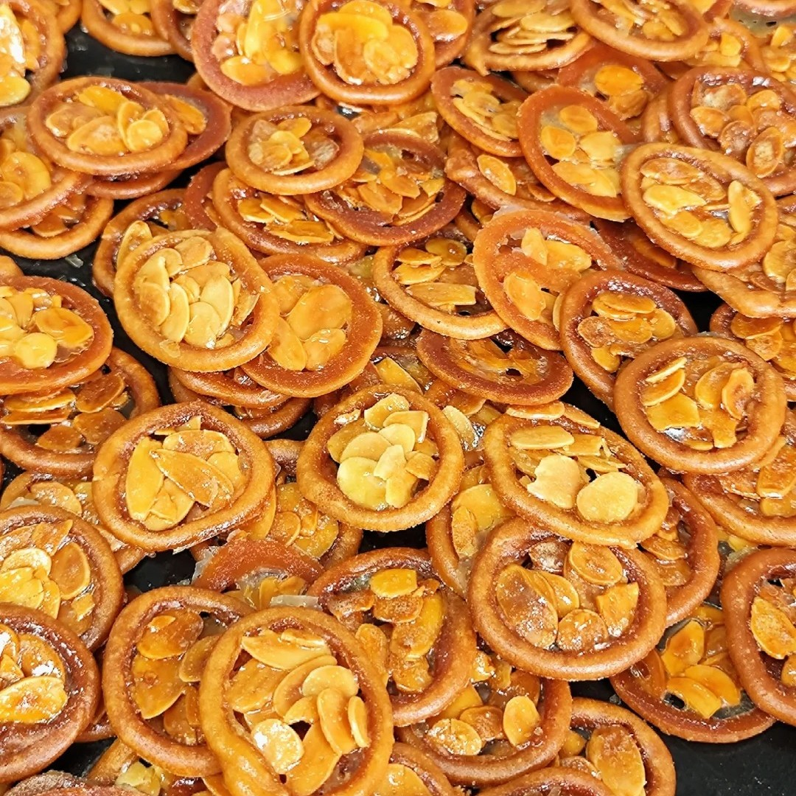

盾饼干



罗马盾牌饼干是一种因外形酷似盾牌而得名的烘焙食品，其制作以黄油与糖粉为核心原料，搭配低筋面粉、蛋液等形成饼干胚，再填入由杏仁片与麦芽糖调制的糖心馅料。该食品通过裱花塑形与烘烤工艺实现薄脆质地，成品具有焦香酥脆的口感特征，常见于家庭烘焙与零食场景。制作过程中需精准控制糖心填充量与烘烤温度，避免馅料溢出或焦化。
制作方法：

罗马盾牌饼干是一种因外形酷似盾牌而得名的烘焙食品，其制作以黄油与糖粉为核心原料，搭配低筋面粉、蛋液等形成饼干胚，再填入由杏仁片与麦芽糖调制的糖心馅料。该食品通过裱花塑形与烘烤工艺实现薄脆质地，成品具有焦香酥脆的口感特征，常见于家庭烘焙与零食场景。制作过程中需精准控制糖心填充量与烘烤温度，避免馅料溢出或焦化。
关于我们|联系我们|邮箱：@qq.com|友情链接